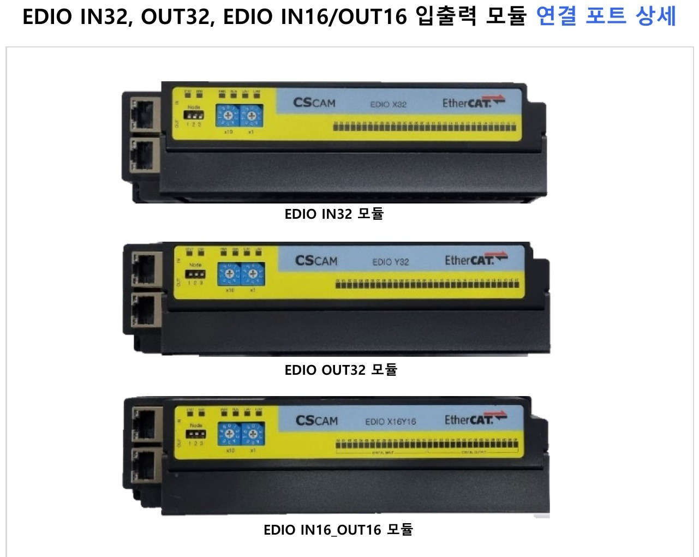

EtherCAT IO模块 · 06
EDIO IN32、OUT32、IN16/OUT16 模块
Y型端子直连式,输入输出可单独选择。
- 可根据需求选择纯输入(IN32)、纯输出(OUT32)或输入输出混合配置(IN16/OUT16)。
Y型端子直连式,输入输出可单独选择。

| 名称 | EDIO-IN32 / EDIO-OUT32 / EDIO-IN16/OUT16 |
|---|---|
| 模块型号(IN32) | 输入(32点) |
| 模块型号(OUT32) | 输出(32点) |
| 模块型号(IN16/OUT16) | 输入(16点)、输出(16点) |
| 电源 | DC24V, 0.7A |
| 安装方式 | 导轨式 |
| 尺寸 | W : 190.6mm D : 50mm H : 42.8mm |
| 项目 | 配置 | 备注 |
|---|---|---|
| 旋转开关 | 地址设置 | — |
| 端子排 | 电源与I/O | — |
| EtherCAT端口 | IN端口 | — |
| EtherCAT端口 | OUT端口 | — |
如需配置方案与报价,也欢迎浏览完整的EtherCAT IO模块产品线。